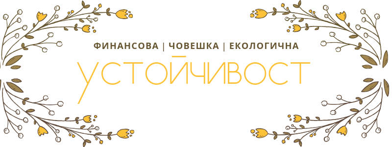

Устойчивост и вашето нечестно предимство | Растеж (част 1)
Устойчивост: какво и как
Девет от всеки десет души по света дишат въздух, в който вредните частици надвишават нормата, което води до всякакви здравни проблеми.
Нивото на водороден диоксид надвишава 414 частици на милион, което е опасно близко до прага, който учените са определили. По време на Индустриалната революция, тоест преди 250 години е било 250 частици.
Ако не се направи нещо, до 2050 г. в океана ще има повече пласмаса отколкото риби.
Ледниците се топят и освен да предизвикат наводнения, изгубен хабитат за белите мечета може да размразят всякакви древни вируси и патогени.
Насред шесто масово измиране сме (наречено холоценско), като учените са изчислили, че има хиляди или милиони застрашени растения и животни най- вече в кораловия риф и тропическите гори. В последните пет века документирано са измрели поне 800 вида, но вероятно десетки други са изчезнали преди да бъдат открити. А немалко са в стрес като трудолюбивите пчелички. Освен биоразнообразието е застрашено равновесието, което пряко ни засяга, а темпото на промените расте.
С една дума човечеството в момента се е запътило към изчезване, тоест не е устойчиво. Планетата ще си е добре.
Но освен да е под заплаха и под отговорност, човечеството, което сме ти и аз, може да действа и да спаси положението.
Какво може да направим като граждани и като служители
Сами е трудно да постигнем нещо, но чрез избори и институционален натиск може да държим отговорни замърсителите. Все пак едва 100 компании са отговорни за 71% от климатичните промени, а по- точно за емисиите на парникови газове като въглероден диоксид и метан.
А пък доста от предложените от икономистите решения зависят и от бизнеса.
Такива са например избягването да се разпечатва всичко, а ако е нужно- използването на рециклирана хартия, или замяната на пътуването със самолет с конферентни разговори на компютъра. Все повече в практиката навлиза и работата от вкъщи, която освен офисното пространство облекчава и трафика. Но най- ефективната инициатива, която се обсъжда, е намаляването на работната седмица на 4 дни.
Защото начина ни на работа не е фиксиран, а плод на борбите на хиляди действащи лица от миналото и от днес: профсъюзни лидери, филантропи и обикновени хора.
Но рано или късно всяка парадигма свършва.
Колко траят човешките начинания
Ето, повечето цивилизации са просъществували около 300 - 600 години. Може би най- старите, въпреки че днес са променени, са Египет и Китай. Персите и римляните са владеели не повече от хиляда години, а инките и ацтеките просъществуват около два века.
Американският биолог и антрополог Джаред Даймънд изследва подробно и описва какво предизвиква възхода и краха на екосистеми и общества, най- вече в книгата си “Колапсът”.
Преди 45 хиляди години в Австралия, маорите за няколко века унищожават мегафауната си, а 60% от птиците изчезват.
Преди 14 хиляди години в Америка, мамутите и другите рошави създания са избити, което пък е описано от израелския историк Ювал Ноа Харари в “Sapiens: Кратка история на човечеството”.
А през XIX век, милиарди странстващи гълъби затъмнявали небето, като по- малко от 100 години по- късно, заради електрическият телеграф и пушката, не остава нито един.
През последните столетия, темпът на унищожението се ускорява, защото за колонизаторите и капиталистите устойчивостта изглежда като недоизползване. Но трябва да си оставим за после.
Какво всъщност представлява устойчивост?
Устойчивостта е сега да оперирате така, че да поддържате дейността си, но да не се отнема от бъдещето- става въпрос както за ресурси, така и за пазар.
Първо, важно е да се даде шанс за възобновяване на използваните ресурси, а и да се ползват пестеливо. Ясно е, че залежите на петрол са ограничени, а динозаврите няма да възкръснат и да произведат повече. (Дори и Джурасик парк да се превърне в истински парк.)
Но дори и електричеството и водата, които могат да се възстановят сравнително лесно пак изискват планиране и първични ресурси.
А ако преследвате прекалено агресивно даден пазар може, особено ако продукта ви се ползва по- дълго, да изтощите силите си или да загубите безвъзвратно някои клиенти, които биха ползвали продукта или услугата, ако са малко по- качествени в момента, в който ви открият.
В бизнеса съществуват множество видове устойчивост:
Финансова
Една от най- важните разлики, които всеки предприемач трябва да умее да прави, е между оборот и печалба.
Оборотът е парите, които ви плащат, а печалбата това, което остава след като платите ток, хонорари, материали и прочие.
Случва се след като всичко е пито и платено, въпреки че сте спечелили немалко пари, да останете с празни ръце.
Ако оборотът ви не е повече от разходите няма да изкарате дълго, ако нямате някакви други средства, или пък съответният бизнес ви е по- скоро хоби.
Също логично, ако разходите ви са ниски, по- бързо стигате до печалба.
Друг компонент свързан с устойчивостта е, че продобиването на клиент трябва да струва по- малко от ценноста му, тоест от сумата, която ще похарчи при вас колкото и пъти да се връща. Обикновено това се преценява по това колко клиенти привлича рекламата.
В дългосрочен план, стабилността на даден бизнес зависи от това доколко от печеленото се реинвестира. Защото след първоначалния успех, човек се отпуска и вместо да развива инфраструктурата, служителите и клиентелата си, харчи за глупости.
А колкото и ефективен да е даден трик, подход или иновация след като конкурентите го имитират губи силата си. Точно заради тази намаляваща възвръщаемост, за да останат на върха, компаниите постоянно трябва да измислят нещо ново.
Човешка
За жалост, немалко фирми днес злоупотребяват с времето и енергията на екипа си, докато хората не започнат да се разболяват или им писва. Такава култура се познава главно по голямото текучество.
Затова да питате за причината, поради която си търсят човек за дадената позиция е добра практика при интервю.
За да запазите служителите си ако сте собственик или мениджър, съществено е да предлагате гъвкаво работно време, работа от вкъщи и най- важното безопасност, както физическа така и психологическа.
Голямо значение има как се отнасяте със служители, които тормозят околните. Ако си затваряте очите може да загубите ценни служители, освен че недобронамерените ще отровят атмосферата.
Напротив ако служителите ви се чувстват сигурни има по- голям шанс да са откровени в преценките си, което би позволило да промените курса си, ако сте нагазили в неблагоприятни води.
Всяка организация се крепи на комуникацията.
Културата не се гради само с тържества или тийм билдинг, а в ежедневието.
Средства и внимание трябва да се отделят и за обучение и развитие на персонала- често служителите ви напускат, защото чувстват, че губят топ уменията си.
Ако пък сте сериозни за бъдещето на екипа си- дайте им време през седмицата да работят по каквото решат. Това ще рече нещо в полза на фирмата, но което не е спешно.
Социална
За да привличате пълноценни и интересни хора може би ще искате да не се ограничавате до сътрудниците си, а да разширите мечтите и стремежите си до семействата, общноста, а защо не и целия свят.
Целта на Google например е да събере цялото знание на света.
A Apple се стремяха да наложат нов стандарт за дизайна, в резултат на което всички телефони започнаха малко или много да си приличат.
Но освен такива грандиозни мисии, може да имате по- тривиални, свързани с благополучието на околните.
За студенти, които учат по специалността например може да предлагате стипендии и стажове. Всеки знае колко трудно е да започнеш работа изведнъж след учението ако нямаш опит.
За да облекчите работещите майки и да успокоите нервните бащи, може да организирате вземане и грижа за децата им.
Може да направите усилия да освежите квартала, където се намира офиса или фабриката ви- да посадите цветя, да боядисате олющените огради и така нататък. Освен че ще е приятно на служителите ви да идват на работа, същото ще важи и за клиентите, които ви посещават.
Целият екип може също да се присъедини към доброволчески труд- какъвто е по сърце или някой, свързан с дейността на фирмата.
И разбира се най- близко до ума е да практикувате благотворителност- било чрез дарение на пари, било чрез вещи, ако произвеждате например униформи, тетрадки или други нужни консумативи. Ако натоварването ви е по- малко може да организирате посещение на старчески домове, помощ или четене на книжки в болницата и други подобни.
Екологична
Допреди няколко години, екологичната отговорност беше модна и само пожелателна, но все повече потребителите осъзнават пред каква катастрофа сме изправени, а фирмите по призвание или принуда изтъкват екологичната отговорност като преимущество.
Благодарение на иновациите може да ползваме чиста енергия.
За да правят икономии, опаковките днес са по- компактни и от преработени материали.
Програми като рециклирането на текстил на H&M добиват популярност.
Най- голямата пречка пред рециклирането е сортирането, а компаниите може да го правят доста по- ефективно, защото знаят от какви материали са направени продуктите им. А като алтернатива може да се използват повторно като при връщането на бирени ботилки.
Разбира се за да има драматичен ефект са нужни радикални действия, но всеки може да допринесе поне малко за намаляване на боклука и замърсяването.
Имаме само една планета. (Сори, Марс!)
Бизнес растеж
Растежът е процесът, при който организъм или организация стават по- сложни като съотвентно могат да се справят със сложни предизвикателства и проблеми.
А човешките дела, както и вселената, стават все по- сложни и хаотични.
Ако не растете или не се развивате по друг начин, стагнирате или по- лошо- регресирате. Но за да растете не е нужно да харчите прекомерно.
Дори да не растете на размер, а си останете например фрийлансър или малко студио, офертите и начина ви на работа ще се усложнят и ще се променят.
Стагнацията е липса на поток, движение или растеж, а щом някаква функция не се ползва, тя закърнява. Затова трябва да се фокусирате върху областите, където с малко усилие или ресурси, постигате много.
Най- бързо се учим от грешките и провалите, затова всяка организация трябва да се стреми да създаде среда, където те да се споделят преди да са довели до катастрофа.
***
Растежът в бизнеса се постига по няколко начина:
- платен: реклама, спонсорство или промоции са само част от начините да вложите парите си, за да спечелите клиенти, само трябва разходите ви да са по- малко от размера на похарченото от хората, които привличате (трябва дългосрочната стойност на клиента CLV > разходите за придобиване на клиенти CAC);
- естествен: след първоначалния тласък когато ви намират лесно, услугата е описана ясно и полезно, а хората си тръгват с добър опит с фирмата ви, обикновено растете с предишни и нови клиенти, а някои продукти дори служат за собствена реклама като Gmail, маркови чанти, часовници или iPhone-и;
- от уста на уста: трябва да създадете впечатляващи и запомнящи се преживявания (viral), както и да имате добра програма за препращане (referrals), където клиентите препоръчват продукта ви на близки и приятели.
Освен според стратегията ви има други видове растеж: линеен и експоненциален.
Линейният растеж не е толкова устойчив, защото разходите в началото са най- големи, а и е по- малко въздействащ. Така че докато още доизкусурявате продуктите и услугите си няма за къде да бързате.
Само че интензивният растеж също може да ви създаде проблеми, ако не можете да обслужвате идващите клиенти- материалите ви ще свършат, инвентарът ви ще намалее, ще се оплетете в логистика, ще се заринете в бумаги и няма да ви достига персонал. Изключение тук правят може би уеб приложенията, но сигурно ви се е случвало да кликнете на популярен линк, а сървърът да е претоварен точно в критичния момент.
***
Най- често срещаната причина да не растете, тоест да не печелите (и задържате) клиенти, е липсата на съответстие между продукта и пазара.
Така че имате две опции: да смените пазара или да направите или да преконфигурирате нов или променен продукт.
Същото става ако сте преклаено агресивни при продажбите като така жертвате бъдещия растеж за краткотрайна печелившост. Ако прекалено много хора пробват и зарязат продукта ви може да не го ползват после, когато е по- добър.
Сполетява ви подобна съдба също ако продуктът има малка стойност и расте благодарение на реклама или други неорганични средства.
Обаче компании, които са достатъчно доминантни за да превземат даден сектор не търпят служители, които казват "Може би растем прекалено бързо". За жалост, дори да не фалират, ако насилват нещата най- малко ще им се наложи да направят някои съкращения.
Обратно ако имате малко, но много ангажирани клиенти зависи в коя фаза сте- ако сте скорошни (стартъп) може да ползвате техники за пробивен растеж (growth hacking), тоест креативно и без бюджет, за да стигнете до някакво устойчиво положение, но ако услугата ви е утвърдена явно няма накъде да растете поне в този пазар и трябва да се преориентирате.
За предпочитане е малко хора да ви откриват, но да остават или да са активни.
Растежът не трябва да става нито прекалено бързо, нито да се превърне в застой.
Така става когато компаниите не навреме се пренасочват от създаване на стойност (приходи) към улавяне на стойност (печалба).
Това значи както и сайт, който гони посещения и затваря, когато омръзва на хората, така и творец, който само раздава направеното, а не иска да измисли начини да му платят.
Това е разликата между сайта за оферти Groupon и веригата супермаркети Walmart, между Стийв Джобс, който знаеше как да направи продуктите на Apple неустоими и тихия, но блестящ инженер Стийв Возняк, както и между братята Люмиер и Холивуд.
***
Началния успех или иновация не гарантира, че ще се задържите, защото повечето работа е след намирането на идеята. Следва упоритата работа!
За да не изпаднете в някои от тези положения, докато имате стабилен растеж, ползвайте успеха и засилката за да разширите дейността си в друг отрасъл, друга страна или с друг продукт. Така например видео платформата Netflix се наложи на щатския пазар преди да предложи услугата си в други страни.
Друг добър подход е да си осигурите:
- повтарящи се приходи: като абонамент, хонорар или такси за поддръжка;
- повтарящите се поръчки: така може да вършите повече работа и да прекарвате по- малко в търсене на нови клиенти.
Редовните плащания са по- лесни за предвиждане и управление, имат повече събираемост, защото ако искат да им свършите следващата поръчка трябва да са платитли първата, а и оперирате с по- малко стрес.
За да го постигнете ако имате медия (блог, видео или подкаст, включително за афилиейт за Amazon да кажем) или приложения (включително SaaS като Adobe, които имат няколко програми), които изискват често ползване, трябва да си осигурите ангажираност.
Ако си изкарвате прехраната като помагате в трудно начинание може освен да предоставите информация или ресурси, в допълнение да създадете общност, да провеждате консултации или да сте достъпни да отговаряте на въпроси, дори да са платени.
Ако предлагате физически продукти може редовно да изпращате кутия с подбрани артикули на записалите се.
Ако сте адвокат, разработчик, дизайнер или копирайтър, тоест услугата ви трябва да се подновява, може да предложите отстъпка за редовните си клиети ако изберат пакет за три месеца или година или когато не е необходимо главното ви нещо да предлагате допълнителни услуги- примерно интериорен дизайнер може да препоръчва и да се разправя с фирма за почистване от името на клиент.
Все повече се завръща и практиката на спонсорството- вие осигурявате съдържание, а феновете ви отделят малка сума, за да ви подкрепят, като на Patreon или github.
Нечестно предимство
Веднъж измислени, повечето идеи и продукти стават безинтересни и почват да губят оригиналността си.
Конкурентите намират начин да ги копират и произвеждат масово, дори да не е така добре. Появяват се измамници.
За да предотвратим това ни трябват структури, активи и умения, които да накарат заинтересуваните от услугата да избират нашия бизнес.
Да поемете риск и да правите трудни избори без доказателство, че ще проработи, изисква нечестно предимство, което да ни дава увереност.
Известно е, че повече от 60% от бизнесите фалират в рамките на 10 години. За най- стари се смятат или японската строителна компания “Конго гуми”, погълната вече от конгломерат, но иначе основана през 578 г. или спорно отворения през 705 г. онсен, което е вид спа или място за отмора, на което японците се наслаждават до днес.
Някои ситуации не изглежда да са в наша полза, но имат такъв шанс.
Например да имате неголям дълг ви кара да оцените силата на парите, да се откажете от излишни покупки и да спестявате.
Младите учени, аутсайдърите също, не са обременени от предразсъдъци и закостенели идеи, затова големите открития стават в началото на кариерата им или извън прашасалите институции.
Младите икономики в Африка и Азия вместо да пригаждат остарялите си съоръжения могат да градят инфраструктурата си с най- модерните технологии, начини на плащане (микрокредити, система за плащане чрез мобилен M-Pesa) и чиста енергия тъй като са назад с развитието.
Когато климатът се променя динозаврите, които изискват огромна енергия и папрати, постепенно измират, а дребните и невзрачни бозайници заемат мястото им.
А пъргавостта на Давид му помага да надвие тежкия и трудноподвижен Голиат.
“Дайте ми опорна точка и достатъчно дълъг лост и аз ще повдигна Земята.” Така е казал древногръцкия математик и инженер Архимед.
Метафоричните лостове в бизнеса и в живота са малки, добре подбрани действия, които водят до непропорционални резултати. С тяхна помощ постигате желаното с повече лекота и с повече ефект. Донякъде отговаря на принципа на Парето, според който 80% от резултатите се дължат на 20% от причините.
Интелегентността и модата ви дават понякога предимство, но то не трае.
Списък на нечестни предимства, които са по- трайни:
- мрежови ефекти
- икономии от мащаба
- икономии от обхвата
- интелектуална собственост
- пасивни доходи
- специализирано знание
- информация
- престиж
- брандинг
- разнообразие
- човешки капитал
- монопол или липса на алтернатива.
Мрежови ефекти (network effects)
Няма значение ако социалната ви мрежа има повече възможности, трудно ще се преборите с Facebook; и не защото ви превъзхожда, а защото всичките ви приятели и интересни хора са там.
За да имате някакъв шанс трябва да започнете от малка група или пазар: както Facebook се разпространява от Harvard към други университети и накрая към целия свят, а Amazon започва от книгите, но днес доставя всичко под слънцето.
Преди положителните предимства, да видим първо тези, свързани с намаляване на разходите чрез обем (икономии от мащаба) или чрез разновидност (икономии от обхвата).
Икономии от мащаба (economy of scale)
Колкото повече единици произвеждате от дадена стока, толкова по- малко ви струва, защото разходите се разпределят. А ако ви струва два пъти по- малко от конкурентите да произвеждате продукта си може да намалите цената на две или да я запазите и така да удвоите печалбата си.
Затова понякога фирмите имат минимална поръчка, примерно за дължина на плат.
Икономии от обхвата (economy of scope)
Тези икономии се получават когато за различни продукти се ползват общи ресурси- общи финанси и маркетинг, концепция, доставки или отпадъчни материали, които служат за друго.
Например по- лесно ще добави детска линия фирма, която вече произвежда мъжко и дамско облекло, аксесоари или обувки. Или за да се произвеждат допълващи се продукти и да се продават в комплект, е по- изгодно на фирма, която вече продава единия от продуктите- доставките вече са осигурени, а и административните подробности.
Друг вариант е да се практикува забавена диференциация- да се произведе генеричен продукт, на който в последния момент да му се сложат украшения или екстри като при автомобилите или на последния етап да се боядиса да речем както правят пуловерите на Benetton.
Така се получава също при вертикална интеграция, тоест когато фирмата контролира ресурсите си и разпространението.
Силата на това предимство е, че предлага разнообразие с минимални допълнителни разходи.
Интелектуална собственост
В училище ни учат, че всеки лев трябва да се изкара с пот и кръв, но най- уважаваните хора печелят от веднъж създаденото с години благодарение на авторски и лицензионни възнаграждения (royalties). Пример са музикантите или фотографите, които продават мелодии или снимки за ползване за видео или реклами, съставители на учебници и дизайнери.
Не случайно Disney се бори толкова яростно за удължаване на изключителните права (copyright) върху героите си.
Силициевата долина пък се възползва от защитата на редица иновативни патентовани технологии (proprietary technology).
А търговските марки пречат на имитатори да злоупотребяват с клиентите ви.
Пасивни доходи
За съжаление дори да имате потенциал за печалба, ако нямате кеш понякога пречи да продължите с дейността си. Затова трябва да имате резервен план за трудни времена под формата на допълнителен доход.
Има 7 вида доходи:
- спечелени: каквото сме изработили срещу труда и времето си;
- дивиденти: печалбата от собствеността на фирмени акции;
- лихви: от внесеното в банките;
- авторски права;
- капиталови печалби: спечеленото от търговията с акции и други ценни книжа;
- приходи: от продажбите на продукти или услуги;
- наем (рента): дали платен за земя, офис или апартамент.
Дори да не може да ви поддържат сами, може да разчитате на тези доходи, когато главния ви източник временно не върви. Твърди се, че милионерите имат по съвпадение поне седем такива дохода, понякога няколко от същата категория.
Специализирано знание
За разлика от техническото знание, специализираното знание не може да се научи. Ако можеше, лесно щяха да ви заменят. То се предава лично, а се добива чрез чиракуване или чрез експерименти.
Обикновено не е записано никъде дали защото няма подходяща система за изобразяването му (примерно все още се опитват да въведат такива системи за регистриране за танцови хореографии) или е прекалено интуитивно та специалистът не може да се изрази докрай с думи (невероятни продавачи).
Така е била загубена тайната на римския бетон, дамаската стомана или гръцкия огън. А също донякъде реториката както е била познавана в Древна Гърция.
Информация
Понякога си мислим, че всичко е открито или известно, но все още има сила в информацията или тайната, която никой друг не знае. Става въпрос за рецепта като тази на Coca Cola, парадигма, която обяснява феномени, които за другите са изненада или познаване на клиентската база, за да предусетите преди другите от какво ще имат нужда.
Особено big data или огромните масиви данни, които общини, компании като Facebook или Google или университетски специалисти, които изучават машинното обучение, събират се пазят строго, защото са богатство.
Така че има два вида тайно познание: за хората и тяхното поведение и за природата (още не сме открили какво точно става като кихаме!).
Още не са открити например всички полезни свойства на екзотичните и дори обикновените растения.
Престиж
Ако приложението или подкаста ви е включен в топ 10, не само получавате повече гледания, препоръки или предложения, но и престиж. Ако успеете да спечелите някакво отличие също печелите много възможности. Това е сигнал, че сте едни от най- добрите в бранша си.
Брандинг
Ако продуктът ви не е в пъти по- добър от този на конкурентите ще се отличите главно по начина ви на комуникация.
Той се обуславя от вашите ценности- кое смятате за най- важно, дали било природата, традициите, разнообразието или сплотеността.
Феновете или клиентите усещат дали ви е грижа- за тях и за произведеното.
Това си личи и по това дали сте помислили за детайлите: какво ще четат докато ви чакат, как ще е опакована доставката и т.н.
Освен това за да направите впечателение трябва освен по- добри да сте достатъчно характерени, както и в повечето случаи клиентите ви да са горди с покупките си. Всички искат да са приети, но и поне малко уникални. А понякога с избора си искаме да кажем “Аз съм по- готин и/или по- богат от теб”.
Рядко признаваме, но често не знаем какво искаме или какво харесваме преди да видим какво предпочитат другите. А и често като клиенти не можем да преценим кое е качествено и кое- не. Освен да предоставите обучение, друг инструмент в помощ на неорентираните е бранда.
Това са неосезаемите неща, които все пак имат решаващо значение. Затова дори смартфоните да са сравними, ще платите в пъти за iPhone отколкото за китайска марка например.
Някои марки се ползват вече поколения с доверие и притегателност като Coca Cola, въпреки че има и други подобни продукти.
Човешки капитал
Ако сте отличен професионалист, най- изгодно е да се съсредоточите върху основния си занаят. Затова си струва да намерите доверени сътрудници и външни изпълнители, които да се заемат с административни, допълващи или периферни дейности. А щом веднъж сте работили с някого, когато започнете нов проект знаете не само, че може да им имате доверие, но и как нещата да потръгнат експедитивно и ефективно. Същото важи и за партньорите във фрийланса.
Освен при аутсорсинг, трябва да имате хора, на които имате доверие вътре в компанията, защото всички трябва да работят заедно. Всеки трябва също да знае ролята си: собственици, служители и инвеститори.
Монопол
В книгата си “От нула до едно” съоснователя на paypal и инвеститор Питър Тийл твърди, че всеки бизнес трябва да се стреми да стане монополист в областта си.
Традиционни услуги като интернет доставчици и водоснабдяване, особено в градчетата, са очевиднен пример, но същото става и в частното и дигиталното пространство като при youtube.
Монополът според него се основава на патентовани технологии, мрежови ефекти, икономии от мащаба или бранд. Иновациите пък са един от най- мощните предпоставки за монопол като например патентования екран на Samsung, който iPhone ползват.
Естествено известни са ни недостатъците на монопола- за служителите често води до отпускане и загуба на инициативност и иновативност, а при клиентите- до повече недоволни от обслужването. Липсата на алтернатива води и до високи цени като при пуканките в киносалона, закуската на летището или при тесните специалисти като хирурците например.
***
Освен да спечелите предимство трябва да знаете как да го задържите. Когато се проваляме обикновено виним конкуренцията или некомпетентността, но по- често се отнася за лежане на стари лаври, страх да не загубим вече постигнатото или непокрита самоувереност.
Всичко се променя постоянно, а ако не можем да сме в крак с тенденциите постепенно губим засилката си. Фирмите, които се страхуват да загубят стойността си издържат най- дълго, да вземем за пример инвестиционната компания Sequoia, чийто партньор Майкъл Мориц твърди, че именно на този страх дължи успеха си, или Amazon, където концепцията за Ден 1 се набива в главите на всички служители.
На предно място, изтиквайки визионерите и мечтателите, идват финансистите и мениджърите.
А понякога се лъжем, че сме имали страхотно преимущество, а просто сме били яхнали вълната или модата, която вече отминава. Спомнете си тамагочи, Farmville или обувките с дебели платформи.
***
За да успявате в бизнеса помага да имате стабилен и здравословен живот.
Затова помагат лични качества и способности като “забавено удовлетворение”, фокусиране, постоянство, възприемчивост и бързо учене, желание да смените мнението си, убедителност, уникални умения или комбинация от такива и усет как да се възстановявате от стрес или интензивни периоди.
Близките ви хора също играят важна роля като ви осигуряват морална подкрепа, но също и определен начин на живот (диета, физическа активност, финанси).
За да осъществявате плановете си ще ви служат също ако имате платформа, капитал или мрежа от контакти.
А сега да видим някои по- тактически съображения, когато сме готови да растем.
Ако искате да спечелите едно нечестно предимство, вижте безплатното обучение по Брандинг.